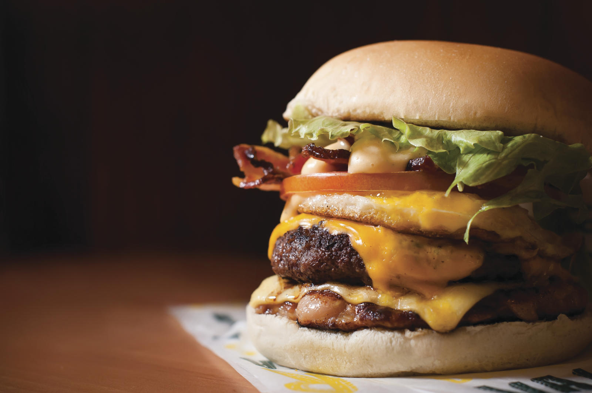
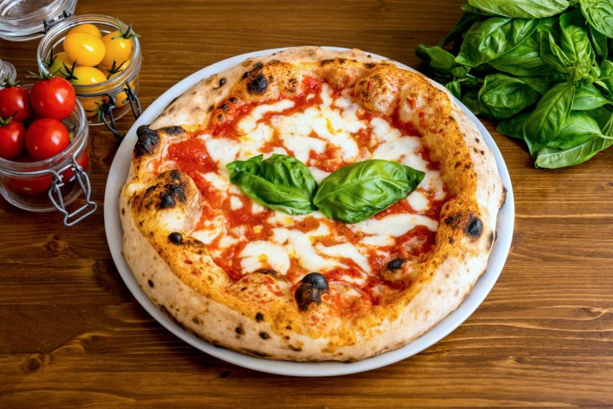

Bem-vindo ao Simple Food, seu e-commerce de comida para todos os paladares!
Este é o seu portal para um mundo de delícias culinárias, onde você encontra tudo o que precisa para se aventurar na gastronomia e criar experiências inesquecíveis à mesa.
Então não perca tempo! Obtenha as maiores delícias, de acordo como seu paladar.
informações adicionais:
Esse site tem como tema comida, porém ele engloba vários aspectos como tradições culinárias, até inovações.
Não existe amor mais sincero do que aquele pela comida.
palavras ditas por - George Bernard Shaw
Neste tema podemos abordar diversos assuntos, como (por exemplo):
- Tendências do E-commerce de Alimentos
- Oportunidades de Mercado
- Melhores Práticas para E-commerce de Comida
- Apresentação dos Produtos
- Nutrição e Saúde
foto 1 representativa do meu tema:
A foto do lanche no seu site mostra que a gente entrega comida gostosa e prática. É pra mostrar que no nosso e-commerce, a pessoa pode pedir um lanche bom e receber rapidinho onde estiver.
foto 2 representativa do meu tema:

A foto do salmão no seu site é um jeito de mostrar que a gente oferece comida de qualidade e saudável. O salmão é conhecido por ser nutritivo e saboroso, e é isso que queremos que os clientes pensem do nosso e-commerce: um lugar onde eles encontram o melhor da comida, fácil e rápido.
foto 3 representativa do meu tema:
Nossa pizza é a combinação perfeita de sabor e tradição. Ela mostra que nosso e-commerce traz o gostinho da Itália para a sua casa, com toda a comodidade e rapidez que você merece./p>
foto 4 representativa do meu tema:

O taco mexicano é um exemplo da variedade que oferecemos. É uma explosão de sabores que celebra a rica cultura mexicana e a diversidade que você encontra no nosso e-commerce.